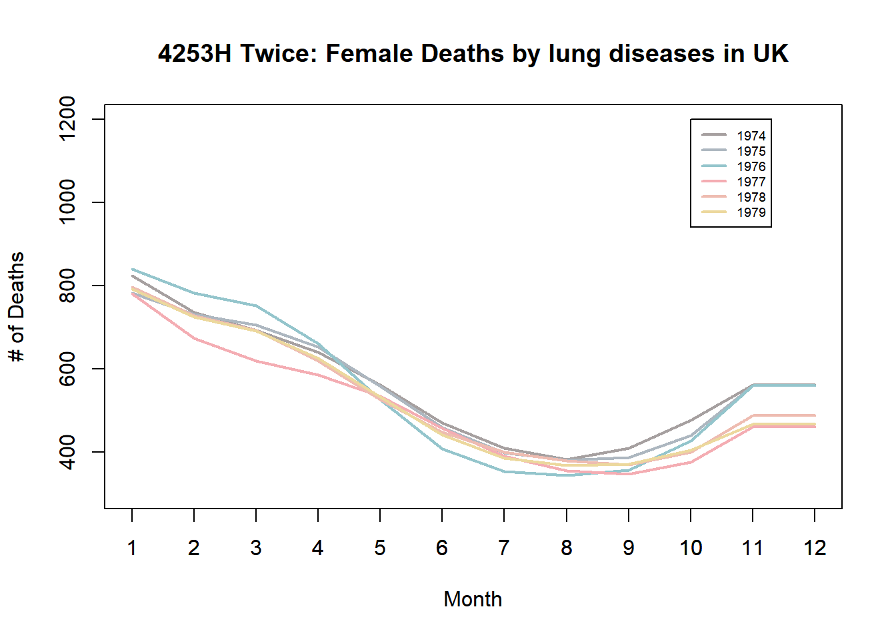

boxplot(friday$Deaths,main="Checking Outlier of Deaths Data")
#outlier는 존재하지 않는 것이 확인되어진다.
Boxplot을 통해 확인 할 경우 outlier는 확인되어지지는 않으나 Whisker의 길이가 길게 뻗어 있는 것이 확인되어 진다. Whisker의 길이와 median의 위치를 고려해볼 때, 자료가 완벽하게 대칭적이지는 않은 것으로 확인되어 진다.
stem(friday$Deaths)
The decimal point is 3 digit(s) to the right of the |
0 | 1225569
1 | 9
2 | 0144669
3 | 00024
4 | 3349
stem(friday$Deaths,2)
The decimal point is 3 digit(s) to the right of the |
0 | 122
0 | 5569
1 |
1 | 9
2 | 0144
2 | 669
3 | 00024
3 |
4 | 334
4 | 9
Stem and Leaf Plot을 통해 데이터를 분석할 경우 데이터의 특성을 분석하려고 하였으나 어떠한 특징을 보이고 있는 것으로 보이지는 않는다. 다만, Stem Plot의 Scale을 약간 조정할 경우 Gap이 있는 것으로 보이는데 세개의 그룹으로 나누어지는 것 처럼 보인다.
qqnorm(friday$Deaths, ylab="Death quantiles");qqline(friday$Deaths, col='red',lty=2)abline(fiv[3],pseudosigma,col="blue",lty=2)title(sub="intercept=2488.5 (median); slope=1723.9 (pseudo-sigma) blue line")
pseudo-sigma와 sigma가 큰 차이가 없고 자료들이 어느정도 직선을 따르고 있는 것을 보인다. (완벽히 직선을 이루는 것은 아니나 - 중간에 곡선형태를 보임 - 직선위에 있는 것처럼 ) 다만 위에서 Stem-Leaf Plot을 그리면서 언급하였던 것 처럼 세개의 cluster가 나타나고 있는 것이 확인되어 진다.
ggplot(friday,aes(x=Deaths))+geom_histogram(aes(y =stat(count) /sum(count)),binwidth=400, fill ="pink", colour ="black")+labs(title="Histogram of deaths in friday", x ="# of Deaths", y ="Density")+theme(plot.title =element_text(hjust =0.5))+scale_y_continuous(labels = scales::percent)+theme_minimal()+ ggeasy::easy_center_title()
Cluster를 재확인 할 수 있음. # K-means Clustering 사용하여 세개의 군집분류
군집분류를 할 경우 세개의 군집이 나타나는데 0시부터 ~ 6까지의 첫번째 Cluster는 심야시간대의 사고로 인한 사망이므로 수가 많지 않은 편이다. 반면, 두번째 Cluster는 일과시간대인 7시부터 15시, 퇴근시간 이후인 18시부터 23시의 경우 사망건수가 중간수준으로 나타나고, 15시부터 18시 사이와 23시부터 24시 사이의 3번째 Cluster에서 사망건수가 가장 많이 나타난다. 퇴근 시간대보다 일과시간대에서 사고가 더 많이 확인되는 것이 확인된다. 특이시간대는 23~24시 사이 구간인데, 음주를 하거나 모임을 가질 때 보통 23시 이후 집에 귀가를 많이 하는데 귀가 과정에서 음주운전 사고가 발생한 것으로 추측되어지지만 확실하지 않다.
Hanning을 적용하기 전 데이터이다. 23시부터 24시 구간의 이상치가 어느정도 완화된 것을 확인할 수 있다. (다만 그 정도가 커보이기 때문에 조정이 필요할 것으로 보인다.) 또한, 8시 부근의 뾰족한 지점이 어느정도 완화되었고, 다른 Cluster 3에 해당하던 값들의 크기도 다소 작아진 것이 확인되어진다. 다만, 평평한 부분이 연속적으로 존재하는 것이 확인되어지기에 Hanning의 적용이 필요할 것으로 보인다. (전반적으로 3RSS(split 두번)나 3RS3R(Repeated 3 두번)에서는 큰 차이가 나타나고 있지는 않은 것으로 보인다.)
다음으로는, 3RSSH, twice방식을 적용한 평활을 적용하였다.
다만, smoothing 함수에 3RSSH twice 방식의 평활을 지원하지 않기 때문에 함수를 만들어 smooting을 진행해야 할 것으로 보인다. https://blog.daum.net/wonil2480/13 의 방식을 참고하여 함수를 형성하였음.
smooth_3RSSH=function(data){ smooth3RSS=smooth(data, kind="3RSS") n=length(data) smooth3RSSH=smooth3RSSfor (i in2:(n-1)) {smooth3RSSH[i] <- smooth3RSS[i-1]/4+ smooth3RSS[i]/2+ smooth3RSS[i+1]/4} smooth3RSSH[1] <- smooth3RSS[1]; smooth3RSSH[n] <- smooth3RSS[n] rough=data-smooth3RSSH roughH=rough smooth3RSS2=smooth(rough,kind="3RSS")for (i in2:(n-1)) roughH[i] <- smooth3RSS2[i-1]/4+ smooth3RSS2[i]/2+ smooth3RSS2[i+1]/4 roughH[1] <- smooth3RSS2[1]; roughH[n] <- smooth3RSS2[n] out=smooth3RSSH+roughH out=as.vector(out)return(out)}#install.packages("LearnEDA")#library(LearnEDA)#smooth.3RSSH.twice=function(data)#{#SMOOTH=han(smooth(attend,kind=”3RSS”)) # 3RSSH smooth#ROUGH=data-SMOOTH # computes the rough#SMOOTH+han(smooth(ROUGH,kind=”3RSS”)) #원래 있는 패키지를 활용한 방식과도 비교하였으나 차이가 없었다. #(CRAN에서 현재 삭제되어 이전 패키지를 다운받아 사용하였음)
3RSS나 3RS3R와 전반적인 추세선은 크게 다르지 않은 것으로 보인다. 다만 Cluster 3 (15시부터 18시 사이와 23시부터 24시 사이)에 해당하는 크기가 큰 자료들이 3RSSH자료에서 조금 더 잘 드러나고 있다. 동일하게 8시부터 9시 부근에 형성된 뾰족한 Outlier로 보이는 자료는 Smoothing 된것으로 확인된다.
마지막으로 4253H, Twice 방식으로 평활한 데이터를 만들고자 한다. Sleekts 패키지의 sleek 활용하여 4253H, Twice 평활을 진행할 것이다.
4253H 방식의 평활은 다른 방식들에 비해서 곡선의 형태가 부드럽게 나타나는 것이 확인된다. 또한 각 Cluster들 별로 특성이 명확하게 드러나고 있다. Cluster 3 (15시부터 18시 사이와 23시부터 24시 사이)에 해당하는 값들이 부드럽게 시계열 그래프 안에서 표현되고 있는 것을 확인할 수 있다. Raw Data에 존재하지 않는 값을 활용해서 양끝값을 극단치에 영향을 최소화한 형태로 표현했고, Hanning을 통해서 평평한 지점들을 보다 부드러운 곡선 형태로 만들었다는 점에서 다른 평활법에 비해서 더 잘 표현되어 있다고 볼 수 있다.
모든 평활법을 비교할경우 다음과 같은 그래프를 그릴 수 있다. 앞에서 언급하였듯이 4253H, Twice 평활법이 가장 적절한 방법이라고 생각된다. 8시부터 9시 사이의 값, 16시 부터 17시 사이의 값 그리고 23시부터 24시 사이의 값이 변환전 자료에 비해 많이 감소되었다. 앞의 두 시간대는 출퇴근 시간이기 때문에 교통량이 많으므로 교통사고가 날 확률이 높아지고 사망사고가 발생할 확률도 다른 시간대에 비해서 높다고 볼 수 있다. 또한 23시부터 24시 시간대의 경우 앞에서 언급한 것과 같이 모든 평활법에서 실제 데이터보다 낮게 평활이 나타났는데, 전체적인 곡선을 고려할 때 이질적인 데이터이므로 그 원인에 대해서 심도있게 고민해볼 필요가 존재한다. Raw Data 기준으로 새벽시간대에는 교통량이 적어 사망사고건수도 적은 편에 비해서 일과시간대와 퇴근시간대에는 사망사고 건수가 많이 나타나고 있고 일과시간대에 퇴근시간대에 비해서 더 많은 사망사고가 발생한다는 것을 확인할 수 있다. 반면 평활된 데이터의 경우 퇴근시간대에 더 많은 사망사고가 발생하는 것으로 보여주고 있는데 평활된 데이터를 해석할 떄는 Raw Data를 유의해서 해석하는 것이 필요하다는 것을 확인할 수 있다.
https://www.ncbi.nlm.nih.gov/pmc/articles/PMC2564438/ 한 보고서에 따르면 사고가 발생하는 원인을 세가지를 제시하였는데 A credible physiological explanation for the importance of good lighting for road safety is provided; low luminance, low contrast images are processed slowly by the visual apparatus, due mainly to the limited temporal characteristics of the rod photoreceptors.
the rod photoreceptors의 제한된 시간적 특성은 야간의 낮은 불빛, 낮은 이미지의 대비로 인해서 시신경의 피로를 불러 일으키고 그 결과 높은 사망사고율로 이어졌음을 제시하였다.
전날 심야시간대에 사망사고 발생건수가 낮은 것에 비해 토요일 0시에 사망사고 발생건수가 높아 진 것은 주말에 앞서 사람들이 밤 늦게 까지 돌아다녀서 그런 것으로 추측되어지기도 하다. 시계열데이터의 왼쪽과 오른쪽이 대칭적이지 않은 이유는 금요일 0시와 토요일 0시(금요일 24시)가 사람들의 시각에서 질적으로 다르기 때문이라고 생각한다. 띠라서 데이터를 더 잘 이해하기 위해서는 목요일과 토요일의 시계열 자료를 확인하는 것이 필요할 것으로 보인다. (요일적 요인의 고려)
#2번 R의 datasets에 있는 sunspot.year 자료를 평활하고 그 패턴을 기술하라. 주기가 있는지? 많아지는 “속도”와 줄어드는 “속도”도 주목하여라.
1778년, 1947년, 1957년, 1958년, 1959년, 1979년, 1980년 데이터가 outer fence 밖에서 발견되며 1950년대 후반에 3년 연속으로, 1979~1980년 2년 연속 outlier를 보였다는 점을 염두에 두고 데이터 분석을 진행해야 할 것으로 보인다.
stem(sunspot.year$Value,1)
The decimal point is 1 digit(s) to the right of the |
0 | 000112233334444455555666666777777788999
1 | 000000000111111111222233334445556666666677789
2 | 000111112233344445666778888899
3 | 0111122234455556666667888888999
4 | 0000112223444555667777778888889
5 | 024444457789
6 | 0000122334444444555677777788999
7 | 00133347888
8 | 0111233455669
9 | 033344669
10 | 01123345666
11 | 0112468
12 | 2256
13 | 125689
14 | 12
15 | 24559
16 |
17 |
18 | 5
19 | 0
앞에서 언급하엿었던 것 처럼 총 7개의 outlier를 확인할 수 있고, 전반적으로 skewed되어있는 데이터인 것으로 확인된다.
ts.plot(sunspot.year_new, main ="Box-Cox : Sunspot.year",xlim=c(1700,2000))
변환전 그래프와 변환 후 그래프를 비교할 경우 차분된 데이터를 확인하면 원자료에서는 분산이 증가하는 경향성이 있었는데 두 변환을 사용할 경우 그 경향성이 다소 완화된 것이 확인되어 진다. 순서대로 원자료에 대한 평활 / Box-Cox Transforamtion에 대한 평활 / Sqrt 변환에 대한 평활을 진행하고자 한다. (3RSSH Twice,4253H Twice)
총 289년간 26번의 Fluctuation이 있는 것으로 보아 대략 11년마다 주기가 반복되어지는 것이 확인된다.
각 주기별 Fluctuation에서 늘어나는 속도와 줄어드는 속도는 대체로 대칭적인 것으로 확인되어 진다.
3RSSH twice 기법에 비해 4253H twice에서의 시계열 데이터가 조금 더 이 Fluctuation의 크기가 줄어든 것이 확인되어 진다.
3RSSH Twice,4253H Twice 두 기법 모두 Hanning을 사용하여 3RS3R Twice 기법에 비해 평평한 지접이 나타나지 않는다.
3RS3R Twice –> 3RSSH Twice –> 4253H Twice 순으로 극단값에 민감 한 것으로 보인다. 다만, 앞에서 언급하였던 1778년, 1947년, 1957년, 1958년, 1959년, 1979년, 1980년 자료들의 값들을 4253H Twice 기법이 다른 Smoothing 기법에 비해서 많이 깎아냈기 때문에 해석에 유의가 필요할 것으로 보인다.
평활법을 사용하면 양 끝값을 실제 데이터를 활용하지 않고 인접 데이터들을 활용해 계산하기 때문에 실제 데이터에 비해서 덜 늘어나는 경향이 있다. 1988년도 실제 데이터는 더 늘어나고 있다는 점을 유의하여 해석해야 할 것이다.
1950년대후반~1960년대초반에 Fluctuaition의 크기가 가장 큰 것으로 확인되고 1800년대 초반의 Fluctuation의 크기가 상대적으로 작은 것으로 보인다.
봉우리의 Cycle은 앞에서 언급하였던 것 처럼 11년 정도이고 이 봉우리의 크기 또한 Fluctuate하는데 약 50년~60년 정도 마다 늘어나고 줄어드는 속도 또한 늘어나고 줄어드는 것으로 보인다. (ex, 1800s년대 초반 3주기 까지는 봉우리의 크기가 작다가 1840년이후의 3~4주기 정도는 봉우리의 크기가 늘어나고 그 이후 3주기 정도는 다시 그 크기가 줄어들고 있다.) (각 봉우리들의 크기 또한 주기성에 따라 움직이고 있는 것이 확인되어 진다.)
이 분석에서는 주기성에 의미를 부여하기 위해서 3RSSH Twice Smoothing 기법이 다른 기법들에 비해서 해석에 도움이 될 것으로 보인다. 4253H Twice 기법을 사용할 경우 봉우리들의 크기 변화를 포착하기 어렵기 때문이다.
plot(forecast(arima(sunspot.year,order=c(9,0,0)),h=10)) # Arima를 통해 미래 데이터가 어떻게 변할지 예측
# 실제 2014년까지의 흑점 데이터와 예측된 데이터의 추이를 비교할 경우 new=ts(read.table("https://raw.githubusercontent.com/SangwonJu/data/main/solar.txt")$V2,start=1988)plot(forecast(arima(sunspot.year,order=c(9,0,0)),h=26))lines(new,col="red",lwd=2)legend(x =1700, y =220, c("Forecasted Data", "Actual Data"), lty=c(1,1),lwd=2,col =c("#2297E6","red"),cex=0.7)
2000년대 초반까지의 흑점수의 변화는 거의 정확하게 예측된 것으로 보인다. 그 이후의 데이터는 다소 차이를 보이나 전반적인 추세는 유사한 것으로 보인다.
plot(forecast(auto.arima(sunspot.year),h=26))lines(new,col="red",lwd=2)legend(x =1700, y =220, c("Forecasted Data", "Actual Data"), lty=c(1,1),lwd=2,col =c("#2297E6","red"),cex=0.7)
3번
R의 fdeaths 자료를 평활하고 분석하여라
Monthly Deaths from Lung Diseases in the UK Three time series giving the monthly deaths from bronchitis, emphysema and asthma in the UK, 1974–1979, both sexes (ldeaths), males (mdeaths) and females (fdeaths).
yr <-floor(tt <-time(mdeaths))plot(mdeaths, fdeaths,xy.labels =paste(month.abb[12*(tt - yr)], yr-1900, sep ="'"))
subset(fdeaths,fdeaths>901) # 1976년 2월 자료가 Fence 밖의 Outlier 인 것으로 확인된다.
[1] 1141
sum(is.na(fdeaths_ts)) #결측치는 없음
[1] 0
Stem and Leaf Plot을 활용해 자료의 분포를 예측해보자 한다.
stem(fdeaths_ts,1)
The decimal point is 2 digit(s) to the right of the |
3 | 34566889999999
4 | 111111223333444555789
5 | 0233355788
6 | 1446667889
7 | 34567799
8 | 023356
9 | 00
10 |
11 | 4
stem(fdeaths_ts,2) # Skewd to the right 된 자료 인 것으로 보인다. 위에서 Boxplot을 통해 확인했던 Outlier를 재확인 할 수 있었다. Stem 4를 축으로 해서 데이터들이 잘 Cluster 되어 있는 것이 확인되어 진다.
The decimal point is 2 digit(s) to the right of the |
3 | 34
3 | 566889999999
4 | 111111223333444
4 | 555789
5 | 02333
5 | 55788
6 | 144
6 | 6667889
7 | 34
7 | 567799
8 | 0233
8 | 56
9 | 00
9 |
10 |
10 |
11 | 4
Skewness와 Kurtosis의 분석
skewness =function(x) { hl=fivenum(x)[2] median=fivenum(x)[3] hu=fivenum(x)[4] skew=((hu-median)-(median-hl))/((hu-median)+(median-hl))return(skew)}skewness(fdeaths_ts) #Skewed to the Right 되어 있는 것을 확인할 수 있다.
[1] 0.2600733
skewness(log(fdeaths_ts))
[1] 0.1379373
skewness(sqrt(fdeaths_ts))
[1] 0.1996023
skewness(-1/(fdeaths_ts))
[1] 0.01295976
skewness(-1/sqrt(fdeaths_ts))
[1] 0.07555799
# Minus Inverse 변환에서 Skewness가 최소화 되는 것으로 보인다.
skewness를 계산할 경우 자료가 정규분포에 비해 skewed to the right 라는 사실을 확인할 수 있다.
stem(log(fdeaths_ts)) # 자료의 비대칭성이 다소 개선 된 것으로 보인다.
The decimal point is 1 digit(s) to the left of the |
56 |
58 | 04589345666777
60 | 012222445667899000579
62 | 2677800567
64 | 26790002249
66 | 0244577812256
68 | 00
70 | 4
stem(-1/(fdeaths_ts))
The decimal point is 4 digit(s) to the left of the |
-30 | 3
-28 | 270
-26 | 6640
-24 | 888544763333
-22 | 885332877544
-20 | 495
-18 | 9298833
-16 | 4323
-14 | 762110875
-12 | 863100776210
-10 | 7621
-8 | 8
# 단봉 분포가 아니라 쌍봉분포 인 것으로 보인다. stem (-24,-22)와 stem -12를 중심으로 하는 두개의 Cluster가 있는 것으로 보인다.
# letter value displaysource("http://mgimond.github.io/ES218/es218.R")(lvd3=lsum(fdeaths_ts,9)) # mid 값이 점차 커지는 중
letter depth lower mid upper spread
1 M 36.5 512.0 512.00 512.0 0.0
2 H 18.5 411.0 547.50 684.0 273.0
3 E 9.5 387.0 588.75 790.5 403.5
4 D 5.0 362.0 607.50 853.0 491.0
5 C 3.0 348.0 622.00 896.0 548.0
6 B 2.0 343.0 622.00 901.0 558.0
7 A 1.5 336.5 678.75 1021.0 684.5
8 Z 1.0 330.0 735.50 1141.0 811.0
# Kurtosis (E-spread) / (H-spread) - 1.705(lvd3[3,5]-lvd3[3,3])/(lvd3[2,5]-lvd3[2,3])-1.705# flatter than normal
[1] -0.226978
데이터의 Five Numbers와 요약 지표
fivenum(fdeaths_ts)
[1] 330 411 512 684 1141
summary(fdeaths_ts)# Median, Mean이 큰 차이가 없다.
Min. 1st Qu. Median Mean 3rd Qu. Max.
330.0 411.0 512.0 560.7 681.5 1141.0
as.numeric(summary(fdeaths_ts)[6]-summary(fdeaths_ts)[1]) # 최고점과 최저점 사이의 차이는 811명
[1] 811
데이터의 최고점과 최저점 사이의 차이는 811 정도인 것으로 확인된다. Median과 Mean값 사이의 차이가 50명 내외로 나타나고 있는 것이 확인되어 진다.
여전히 Probability Plot에서 역 S자적 성질이 사라지지 않고 있기 때문에 데이터는 혼합 분포에서 추출 된 것으로 추측된다. Minus Inverse 변환을 통해서 예측하였던 것이 재 확인되고 있다.
정리
해당 데이터는 정규분포를 따르고 있지 않다. (정규성x)
library(forecast)ts.plot(fdeaths_ts, main ="Female Deaths from Lung Diseases Time-Series Plot") #시계열 자료의 계절성을 확인할 수 있다.
# 1976년을 제외하면 데이터의 Fluctuation이 일정하게 유지되고 있다.plot(diff(fdeaths_ts), main ="Difference : Female Deaths from Lung Diseases") # 차분데이터를 확인할 경우 동일하게 1976년 자료를 제외하면 분산의 증가 없이 일정하게 변동성이 유지 되는 것으로 볼 수 있다.
Box-Cox Transformation을 통해서 데이터를 변환하였다. (계절변동을 확인하기 위해서 데이터의 정규성을 개선하기 위해)
fdeaths_1979=ts(fdeaths_ts[61:72],start=1) yr=paste("fdeaths","_",1974:1979,sep="")xat=seq(0,12,by=1)par(mfrow=c(2,3))for (i in yr) {ts.plot(as.name(i),main=i,ylab="Female Deaths by lung cancer")axis(side=1,at=xat)}
각 년도별 계절성을 비교하기 위해서 이런식으로 그래프를 연도별로 쪼개서 그렸다. 연도별로 그러한 경향성이 비슷하게 드러나고 있는 것으로 보인다.
par(mfrow=c(1,1))ts.plot(fdeaths_1974,main="Female Deaths by lung diseases in UK",xlab="Month",ylab="# of Deaths",col="#A6A0A0FF",lwd=2,ylim=c(300,1200))axis(side=1,at=xat)lines(fdeaths_1975,lwd=2,col="#ADB7C0FF")lines(fdeaths_1976,lwd=2,col="#94C5CCFF")lines(fdeaths_1977,lwd=2,col="#F4ADB3FF")lines(fdeaths_1978,lwd=2,col="#EEBCB1FF")lines(fdeaths_1979,lwd=2,col="#ECD89DFF")legend(x =10, y =1200, c(1974:1979), lty=c(rep(1,6)),lwd=2,col =c(as.character(pal)),cex=0.6)
전체데이터와 월별데이터에 평활을 진행하고자 한다. 평활법은 교수님께서 추천하셨던 3RSSH Twice, 4253H Twice에 더해 Hanning이 이루어지기 전 평활법인 3RS3R Twice를 추가하고자 한다.
평활법을 적용하여 확인할 경우 원 자료에 비해 최댓값과 최솟값의 폭이 많이 줄어들었음을 확인할 수 있다. 작은 값에서는 크게 변화가 없지만 값이 큰 자료들의 경우 많이 깎여나갔다. 시계열을 확인하는데 있어서 그 계절성을 확인하기 좋은 형태로 평활이 된 것은 사실이지만, 위에서 언급한 1976년도의 특이값이 사라지게 되었고 그 특이값을 해석하는데 있어서 주의를 기울여야 할 것으로 보인다. 3RS3R Twice 기법의 경우 Hanning이 진행되지 않았기 때문에 다소 각진 부분이 남아있지만, 전반적으로 계절성이 나타나는 형태로 데이터를 변화시켰다. 나머지 Hanning을 사용한 2가지 평활법의 차이를 분석하면 4253H방법에서 큰 값들의 감소폭이 크게 나타나고 있다. 3가지 평활법의 양 끝자료의 경우 실제 존재하는 데이터를 가지고 만든 것이 아니기 때문에 그 추세를 해석하는데 있어서 용이하지만 실제 데이터와 차이가 있으므로 해석에 유의해야 할 것이다.
앞에서 시계열 Decompose를 통해서 그렸던 계절성 그래프의 모양과 4253H Twice의 그래프가 상당히 유사한 것으로 보인다. 1년을 주기로 폐질환 사망자수가 Fluctuate 하고 있는데 겨울철에 전반적으로 증가하고 여름철에 감소하는 경향성을 가지는 것이 확인된다. 각 주기는 거의 대칭적으로 증감을 반복하고 있으며 1976, 1977년도를 제외하면 사망건수는 거의 비슷하게 유지 되는 것을 확인할 수 있다. 따라서 시계열 자료를 해석할 때 1976년도와 1977년도 자료는 유의해서 해석해야 할 것으로 보인다.
https://premium.weatherweb.net/weather-in-history-1975-to-1999-ad/ For England and Wales (using the Met Office EWR/EWP series), it was one of the six DRIEST winters in the previous 100 years, and the third consecutive season with less rain than usual: summer and autumn 1975 were also dry. Winter 1975/76 had around 61% of average rainfall over England and Wales. It was this persistence of low precipitation, particularly throughout the winter ‘re-charge’ season, that led to the severe DROUGHT problems encountered in 1976 (q.v.) 1976년도의 특이 값에 대한 원인을 분석할 때 해당 년도의 겨울이 100년중 6번째로 건조한 겨울이었다는 점을 고려해야 할 것으로 보인다. 가뭄 문제를 걱정할 정도로 겨울이 건조하였다는 사실은 해당 년도에 사람들이 호흡기 질환을 걸릴 가능성이 상당히 높았음을 예측할 수 있다.
##Raw Data
ts.plot(fdeaths_1974,main="Female Deaths by lung diseases in UK",xlab="Month",ylab="# of Deaths",col="#A6A0A0FF",lwd=2,ylim=c(300,1200))axis(side=1,at=xat)lines(fdeaths_1975,lwd=2,col="#ADB7C0FF")lines(fdeaths_1976,lwd=2,col="#94C5CCFF")lines(fdeaths_1977,lwd=2,col="#F4ADB3FF")lines(fdeaths_1978,lwd=2,col="#EEBCB1FF")lines(fdeaths_1979,lwd=2,col="#ECD89DFF")legend(x =10, y =1200, c(1974:1979), lty=c(rep(1,6)),lwd=2,col =c(as.character(pal)),cex=0.6)
3RS3R Twice
ts.plot(ts(smooth(fdeaths_1974, kind="3RS3R",twiceit=T),start=1, end=12),main="3RS3R Twice: Female Deaths by lung diseases in UK",xlab="Month",ylab="# of Deaths",col=pal[1],lwd=2,ylim=c(300,1200))axis(side=1,at=xat)lines(ts(smooth(fdeaths_1975, kind="3RS3R",twiceit=T),start=1, end=12),lwd=2,col=pal[2])lines(ts(smooth(fdeaths_1976, kind="3RS3R",twiceit=T),start=1, end=12),lwd=2,col=pal[3])lines(ts(smooth(fdeaths_1977, kind="3RS3R",twiceit=T),start=1, end=12),lwd=2,col=pal[4])lines(ts(smooth(fdeaths_1978, kind="3RS3R",twiceit=T),start=1, end=12),lwd=2,col=pal[5])lines(ts(smooth(fdeaths_1979, kind="3RS3R",twiceit=T),start=1, end=12),lwd=2,col=pal[6])legend(x =10, y =1200, c(1974:1979), lty=c(rep(1,6)),lwd=2,col =c(as.character(pal)),cex=0.6)
3RSSH Twice
ts.plot(ts(smooth_3RSSH(fdeaths_1974),start=1, end=12),main="3RSSH Twice: Female Deaths by lung diseases in UK",xlab="Month",ylab="# of Deaths",col=pal[1],lwd=2,ylim=c(300,1200))axis(side=1,at=xat)lines(ts(smooth_3RSSH(fdeaths_1975),start=1, end=12),lwd=2,col=pal[2])lines(ts(smooth_3RSSH(fdeaths_1976),start=1, end=12),lwd=2,col=pal[3])lines(ts(smooth_3RSSH(fdeaths_1977),start=1, end=12),lwd=2,col=pal[4])lines(ts(smooth_3RSSH(fdeaths_1978),start=1, end=12),lwd=2,col=pal[5])lines(ts(smooth_3RSSH(fdeaths_1979),start=1, end=12),lwd=2,col=pal[6])legend(x =10, y =1200, c(1974:1979), lty=c(rep(1,6)),lwd=2,col =c(as.character(pal)),cex=0.6)
4253H Twice
ts.plot(ts(sleek(fdeaths_1974),start=1, end=12),main="4253H Twice: Female Deaths by lung diseases in UK",xlab="Month",ylab="# of Deaths",col=pal[1],lwd=2,ylim=c(300,1200))axis(side=1,at=xat)lines(ts(sleek(fdeaths_1975),start=1, end=12),lwd=2,col=pal[2])lines(ts(sleek(fdeaths_1976),start=1, end=12),lwd=2,col=pal[3])lines(ts(sleek(fdeaths_1977),start=1, end=12),lwd=2,col=pal[4])lines(ts(sleek(fdeaths_1978),start=1, end=12),lwd=2,col=pal[5])lines(ts(sleek(fdeaths_1979),start=1, end=12),lwd=2,col=pal[6])legend(x =10, y =1200, c(1974:1979), lty=c(rep(1,6)),lwd=2,col =c(as.character(pal)),cex=0.6)

원자료 –> 3RS3R Twice –> 3RSSH Twice–> 4253H Twice순으로 시계열의 추세가 유사해지고 있는것을 확인할 수 있다. Hanning을 사용하여 3RSSH Twice, 4253H Twice는 평평한 구간 없이 부드럽게 넘어가고 있으며 1976년도 평활법을 통해서 최대값이 줄어들어 다른 년도와 유사한 계절성을 확인할 수 있게 되었다.
Augmented Dickey-Fuller Test
alternative: stationary
Type 1: no drift no trend
lag ADF p.value
[1,] 0 -1.29 0.214
[2,] 1 -1.14 0.269
[3,] 2 -1.42 0.169
[4,] 3 -1.13 0.273
Type 2: with drift no trend
lag ADF p.value
[1,] 0 -3.48 0.0131
[2,] 1 -4.34 0.0100
[3,] 2 -5.73 0.0100
[4,] 3 -6.61 0.0100
Type 3: with drift and trend
lag ADF p.value
[1,] 0 -3.40 0.0628
[2,] 1 -4.36 0.0100
[3,] 2 -5.69 0.0100
[4,] 3 -6.68 0.0100
----
Note: in fact, p.value = 0.01 means p.value <= 0.01
fit <-auto.arima(fdeaths)plot(forecast(fit, level=c(80, 95), h=12))
# 다음 1년간의 변화를 예측할 경우 이전의 자료들과 비슷한 추세를 가지고 있는 것이 확인되어 진다.
4번
R의 lynx 자료를 평활하고 분석하여라.
Annual numbers of lynx trappings for 1821–1934 in Canada. Taken from Brockwell & Davis (1991), this appears to be the series considered by Campbell & Walker (1977).
data(lynx)boxplot(lynx,main="Boxplot of lynx data")
Boxplot을 통해서 확인했더니 총 4개의 Outlier가 확인되어 진다. Median이 Box 안의 밑에 위치하고 있는 것으로 보아 Skewed to the Right 한 자료일 가능성이 높다.
boxplot(lynx)$stats[5,] # upper fence의 값은 4950이고
[1] 4950
boxplot(lynx)$out #5943, 6721, 6991, 6313 4개의 자료가 Fence의 밖에 존재한다.
[1] 5943 6721 6991 6313
Stem and leaf plot을 통해서 해당 데이터의 분포를 추측해본다.
stem(lynx)
The decimal point is 3 digit(s) to the right of the |
0 | 0001111111122222222222333333344444444444
0 | 55555566677777788889
1 | 00013344
1 | 556666788
2 | 011334
2 | 55677778899
3 | 01344
3 | 5568889
4 | 034
4 |
5 | 0
5 | 9
6 | 3
6 | 7
7 | 0
Box plot을 통해서 확인하였던 5개의 Outlier를 확인하였다. 0 stem들에 자료들이 많이 몰려있고 점차 줄어드는 것을 확인할 수 있다. Skewed to the right 되어 있는 분포를 따르고 있는 것으로 추측되어진다.
두 Plot을 비교할 경우 지수 분포에 더 적합한 것으로 보인다. (lynx data는 정규성이 확보되지는 못한 것으로 볼 수 있다.)
잡힌 Lynx 수를 평활하기 위해서 수업시간에 교수님께서 Recommend 하신 3RSSH Twice방법과 4253H Twice방법에 더해 3RS3R Twice 활용하고자 한다.
library(forecast)ts.plot(lynx,main="Time series plot of lynx caught",ylab="# of Caught", xlab="Year",xlim=c(1820,1940))
# 시계열 자료의 주기성을 확인할 수 있다.# 1828년, 1866년, 1904년을 중심으로 하는 봉우리 주기들이 다른 주기들에 비해서 그 늘어나는 강도가 더 큰 것으로 확인되어 진다. 반면 1875년을 중심으로 하는 주기의 경우 다른 봉우리들에 비해서 그 늘어나는 강도가 부족 한 것으로 보인다.# 111년동안 12번의 봉우리 주기가 돌아왔으므로 9~10년 주기로 늘어났다가 줄어들었다를 반복하는 것을 확인할 수 있다. Lynx가 늘어나는 속도와 줄어드는 속도는 일치하는 것으로 확인되어 진다. ts.plot(diff(lynx),main="Difference : lynx caught",ylab="# of Caught", xlab="Year",xlim=c(1820,1940))
# 차분데이터를 확인할 경우 위에서 언급한 특이점들을 제외하면 분산의 증가 없이 일정하게 변동성이 유지 되는 것으로 볼 수 있다.
Box-Cox Transformation을 통해서 데이터를 변환하였다. (데이터의 정규성을 개선하기 위해)
전체데이터와 월별데이터에 평활을 진행하고자 한다. 평활법은 교수님께서 추천하셨던 3RSSH Twice, 4253H Twice에 더해 Hanning이 이루어지기 전 평활법인 3RS3R Twice를 추가하고자 한다.
library(sleekts)pal3=as.vector(ghibli_palette("PonyoMedium")[c(1,2,4,7)])ts.plot(lynx,main="Raw Data:All",ylab="# of Caught", xlab="Year",xlim=c(1820,1940),lty=2,col=pal3[1])lines(ts(smooth(lynx, kind="3RS3R",twiceit=T),start=1821,end=1934),col=pal3[2],lwd=2)lines(ts(smooth_3RSSH(lynx),start=1821,end=1934),col=pal3[3],lwd=2)lines(ts(sleek(lynx),start=1821,end=1934),col=pal3[4],lwd=2)legend(x =1910, y =6800, c("Default", "3RS3R Twice", "3RSSH Twice","4253H Twice"), lty=c(2,1,1,1),lwd=2,col = pal3,cex=0.5)
Lynx의 포획 수는 약 10년마다 증가하고 감소하는 패턴을 확인할 수 있다. 덫에 걸리는 Lynx들의 수는 자연의 Lynx 개체수와 비례한다고 볼 때, 10년 주기로 총 개체수가 줄어들고 늘어난다고 볼 수 있다. (단, 설치된 Trap의 수가 매 시기별로 어느정도 동일하다는 조건이 붙어야 한다.)
평활법 적용으로 인해 원 자료에 비해 최댓값과 최솟값의 폭이 많이 줄어들었다. 작은 값에서는 크게 변화가 없지만 값이 큰 자료들이 많이 줄어들었다.
앞에서 언급하였던, 1828년, 1866년, 1904년의 특이 봉우리 들이 평활 이후에는 상당히 낮아졌다. 1866년 봉우리의 경우 3가지 평활법에서 모두 거의 절반 가량을 깎아냈다. 또한 1913년, 1916년의 경우 봉우리가 연속적으로 존재하였는데 평활 이후에는 이러한 봉우리가 하나의 봉우리로 합쳐지게 되었다. 평활로 인해 깎아진 봉우리들을 적절하게 해석하기 위해서는 원 데이터들을 반드시 고려해야 할 것이다. (원 데이터에 발생한 특이값들이 특정한 요인에 의해서 발생했다면 그 요인을 정확히 파악하는 것이 시계열 데이터의 올바른 이해를 위해서 필요할 것이라고 보인다.)
3가지 평활법 모두 양 끝자료를 실재하는 자료가 아닌 대체된 자료를 활용하였음에도 불구하고 실제 자료랑 큰 차이지 보이지 않고 있다. 4253H Twice 기법이 다른 두 기법에 비해서 큰 값들을 많이 깎아내는데 이를 해석하는데 있어서 상당히 유의해야 할 것으로 보인다.
Lynx 개체수의 10년의 주기성을 확인하기 위해서는 4253H Twice 기법을 사용하는 것이 적절해 보이고, 각 Local 봉우리별 크기의 변화에 집중하기 위해서는 3RSSH Twice를 사용하는 것이 적절해 보인다.
1866년, 1904년의 봉우리 다음 봉우리들은 상당히 Peak의 높이가 낮아졌는데 그 원인을 이전 봉우리에서 생성된 많은 개체들이 서식지를 파괴한 것이 아닐까 라고 추측해볼 수 있으나 확실하지 않다.